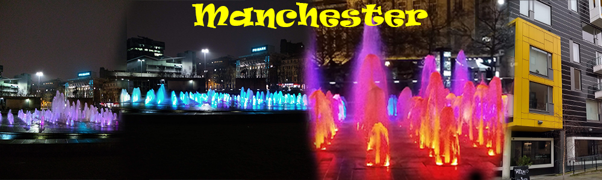

In manchester there is a huge shopping centre there is all kinds of shops to visit and its all under one roof. Explore Manchester's impressive selection of department stores, where you will find the widest range of designer brands to shop on the high street. You'll find high street favourites like Marks and Spencer, House of Fraser and Debenhams in the city centre and other top department stores at intu Trafford Centre.